החברים של
- [הטבה ראשונה, מהלקוח]
- [הטבה שנייה, מהלקוח]
- [הטבה שלישית, מהלקוח]
[איך מצטרפים, מהלקוח]


MATCHA BY MATTO
359 ₪
[איך קונים באוטוטו: בקיוסק, בוואטסאפ או באתר, מהלקוח]
קפה, מאפים טריים וכריכים מהבוקר, ובערב כוס יין בחוץ. ברמת אביב, ברחוב גרונמן.
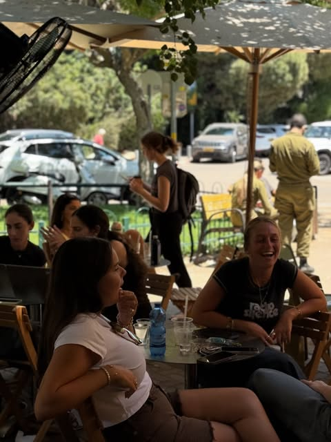
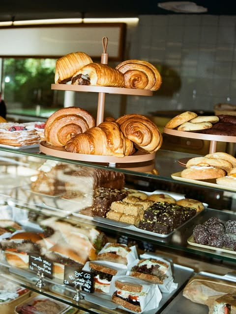
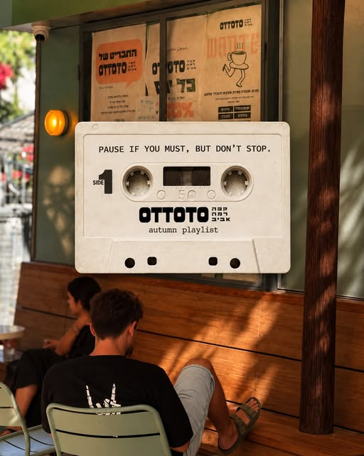
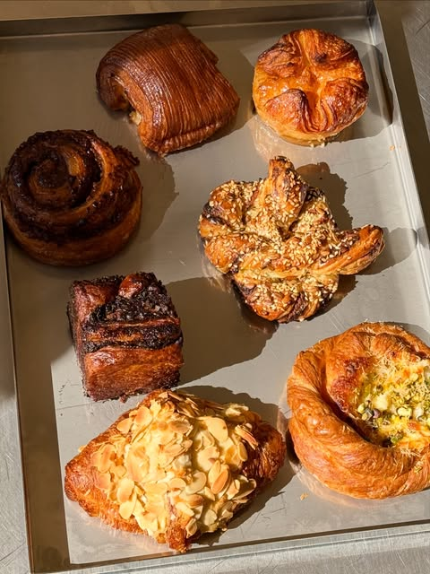
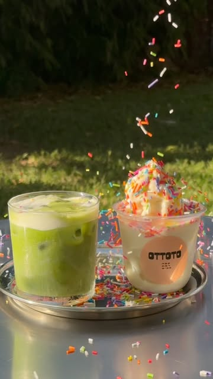
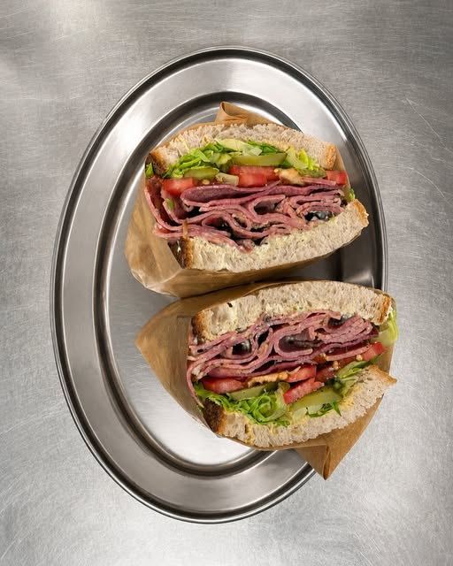
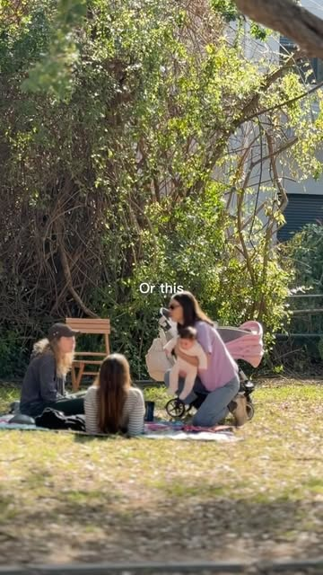
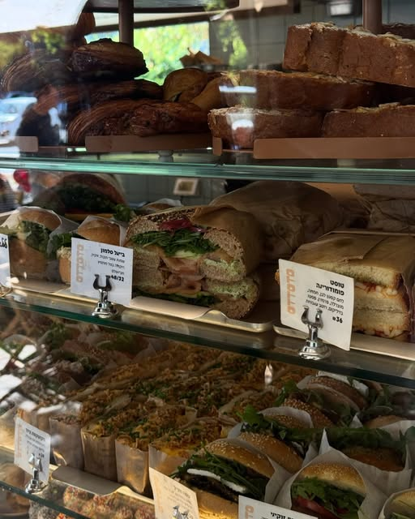
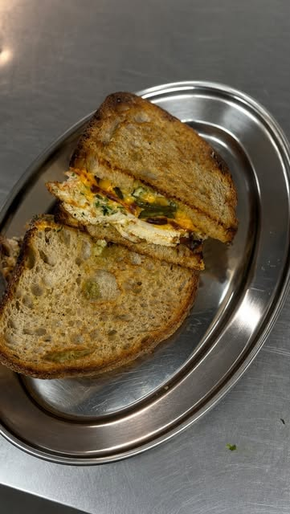
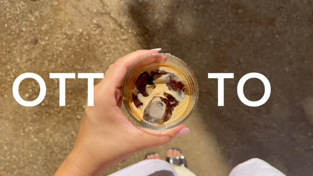
[איך מצטרפים, מהלקוח]
